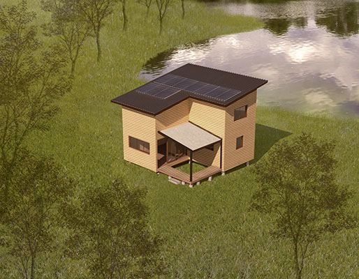

Kerme K. Smith
Architecture
Selected work
Drawings, renderings and models from the last four years. Select an image to open the project.




Timeline
Education, experience and projects, newest first.
- 2027 (expected) — Bachelor of Architecture · Education · Syracuse University
- Summer 2026 – present — Intern, Walton Architectural Group · Experience · Syracuse, NY
- Summer 2026 – present — Intern, K+K Architectural Library · Experience · Syracuse, NY
- Summer 2026 – present — Curriculum head, Future Design for Syracuse · Experience · Syracuse, NY
- Spring 2026 — Toyworks · Project · Syracuse, NY
- Fall 2025 — Studied abroad in London · Education · Syracuse Abroad
- 2025 — Deptford Roots Wellness Center · Project · Deptford, London
- Summer 2025 — Intern, Kim L Woods Construction · Experience · Dalton, GA
- Spring 2024 — Southside Syracuse Community Greenhouse · Project · Syracuse, NY
- Summers 2023, 2024 — Craft instructor and camp counselor · Experience · Legacy Christian Academy, O’Fallon, IL
- Fall 2023 – present — Assistant, AIAS · Experience · American Institute of Architecture Students
- 2023 — Willow Point Retreat · Project · Owasco Lake, NY
- 2023 — Mexico D.F. Community Center · Project · Mexico City
© 2026 Kay Smith